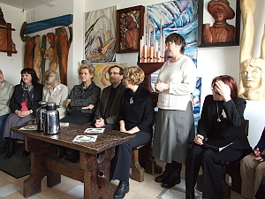

do aktualności
do aktualności2012-01-22
Przybywamy tłumnie z kolędą na ustach, jak przystało na chór i porę. Gospodarze witają w drzwiach, rozśpiewaną Cameratę. Zapraszają, usadzają, częstują. O jaka piękna „umundurowana” para. Pani dyrygent jak zwykle ... przy instrumencie (to nie ma znaczenia grającym, czy dziele sztuki).
Przybywa nasz gość honorowy pani Aniela Birecka, która co roku zamawia mszę w intencji Cameraty. Spotkanie rozpoczyna pani dyrygent od podziękowań. Camerata naszemu gościowi pięknie „śpiewnie podziękowała” i spotkanie potoczyło się dalej.
A dalej same niespodzianki. Maria i Bogusia postanowiły obdarować prezencikami i dyplomami z wierszykami wszystkich tych, którzy choć troszkę przyczynili się do organizowania 15-lecia Cameraty i tych, którzy pomagają przez cały czas. I się zaczęło...
Maria zapowiada niespodzianki i wyciąga pierwszy upominek.

Oczywiście na pierwszy ogień poszła pani Iza Szota – dyrygentka...(milutka podusia, żeby odespała „zaległości pojubileuszowe”.)
A dalej już się potoczyło. Ela... ( no nie, my jej nie wysyłamy do garów, bo co my bez niej zrobilibyśmy )
pan Konrad Szota... ( o nasze nieszczęsne „kocury”, ale obiecałyśmy, że zrobimy, a narazie kocurek – futrzaczek)
„chwalipięty”
Anka... ( kasa na rozsadę, niech hoduje, w końcu dla nas)
Adam... ( o to mu się przyda, bo przy nas, to żołądek nie raz go boli, że o głowie nie wspomnę)
Ewa...( super kapcie, ale nie zasiedź się w tym fotelu, bo kto będzie mi śpiewał do ucha)
Bogusia... ( kseruje, nosi, rozdaje i dostała „mieszek”, żeby nie pogubić)
Ja czyli Gośka...( nowy nabytek w chórze, ale przydatny, tak mówią. Miska, bo podaję mp3 jak na tacy. Co do aureoli, to jeszcze chyba zbyt wcześnie.)
Basia...(nieoceniony „skryba” kronik Cameraty, więc dla niej „kaganek oświaty”. Ale mi się „rymnęło”, to dlatego że siedzę na próbach obok Ewy. To chyba przełazi.)
Były śpiewy jak na chór przystało.
No i oczywiście Ewa nie zawiodła... nowa fraszka tym razem o mnie, bo podobno zasłużyłam już sobie na dłuższą i nowy wierszyk. Interpretacja jak zwykle pani Iza Szota - dyrygent.
Było gwarnie, było wesoło, było super, ale czas do domu gospodarze mili.
Dziękujemy.
do aktualności